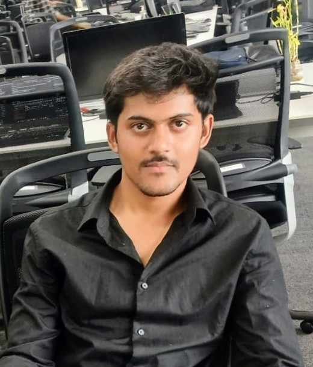

Founder of Preelock & Preecode.
I'm a Computer Science student, Full-Stack Developer, UI/UX Designer, and AI enthusiast from Azamgarh, Uttar Pradesh, who enjoys turning ideas into real products.
Preelock is my local-first focus and productivity app for Windows and macOS, live on the Microsoft Store. Preecode is my AI-powered coding practice and interview-prep platform inside VS Code.
What started as curiosity about technology quickly became an obsession with building. Over the past year, I've spent most of my time exploring AI, participating in hackathons, experimenting with new tools, and transforming ideas into working products.
I enjoy working across full-stack development, AI-powered applications, and user experience design. Whether it's building an AI coding companion, designing digital experiences, or rapidly prototyping startup ideas, I love taking a concept from zero to launch.
Currently, I'm focused on learning AI and Machine Learning, building intelligent products, and exploring how technology can create meaningful real-world impact.
PREELOCK
Local-first focus and productivity desktop app for Windows and macOS — timed focus sessions, app and website blocking, and screen-time tracking, with no cloud or telemetry. Live on the Microsoft Store.
PREECODE
AI-powered coding platform and VS Code extension designed for interactive coding practice and developer productivity.
SAATHI
Mental wellness platform focused on reducing stress and emotional isolation using AI-assisted experiences.
MEDIFLOW
Hospital inventory and stock intelligence system built to improve operational efficiency and resource management.
Python • JavaScript • TypeScript • React • Node.js • Rust • Tauri • Supabase • MongoDB • Express
Vercel • Render • GitHub • AI/ML • LLMs • Agentic • data-analysis • Preelock • Preecode
▸ Exploring the latest AI tools and technologies
▸ Reading about technology, startups, and geopolitics
▸ Solving Rubik's cubes
▸ Building side projects and experimenting with new ideas
▸ Brainstorming future startup concepts
To become a Machine Learning Engineer focused on building futuristic products that merge intelligence, design, and real-world impact.
Long-term vision: creating AI-native systems that feel seamless, useful, and deeply integrated into everyday human workflows.
STATUS: LEARNING • BUILDING • RESEARCHING